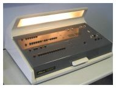
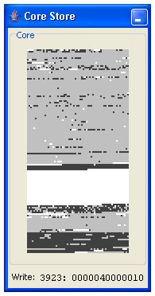
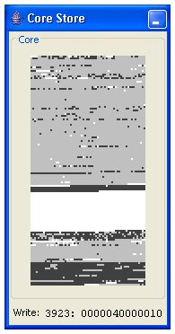

|
There are two ways to run the Elliott 803 simulator:
Most people will want to use the GUI interface.
Some further details of how programs are loaded and run are given here:
The GUI interface can be started by running the simulator JAR file or by
running the elliott803.Main program within the JAR.
java -jar elliott803-n.n.n.jar [options] [machine]orjava elliott803.Main [options] [machine]
machine- A previously saved machine image.
-look lookandfeel- The name of the Java GUI look-and-feel to use. By default the standard platform look-and-feel will be used. Other look-and-feels that may be available (depending on operating system and Java version) include:
metal,windows,classic,motif,gtkandnimbus.-load- Prompt to load a saved machine image when the simulator starts.
-save- Prompt to save the current machine image when the simulator ends.
The GUI interface displays a main window containing several smaller internal windows representing the various hardware and devices that form the Elliott 803 simulation. These windows can be moved around and resized (or minimized) as required. The current layout can be saved when the simulator is closed and restarted next time.
Most interaction will take place with the paper tape reader and tape punch devices and with the system operator's console.
When the simulator starts up it can load a pre-saved machine image containing the complete core memeory contents and the size, position any layout of all the application windows.
The image can either be provided as a parameter when starting the application
or the option -load can be used and the system will prompt
to select the image to use.
If no image is provided a default window layout will be used.
When the simulator is closed it can optionally prompt to save the current
machine image ready to restart next time.
This can be useful if you have resized and re-arranged the windows or if you
want to avoid having to reload large data tapes such as the ALGOL compiler.
The option -save should be used when starting the application
to tell it to prompt to save the image when it closes.
The operator console is the mechanism by which the computer is operated. There are 39 buttons on the left hand side called the Word Generator. These buttons are used to form complete machine words, typically instructions. For convenience the value of the instruction currently formed by the buttons on the word generator is shown at the bottom of the window.
Note: When one of these 39 buttons is pressed it will stay pressed down. You can release the button, and all other buttons in the same group, by pressing the red release button (marked with an R) at the far left of the row.
On the right hand side are the various operation buttons and indicator lights. The Clear Store button sets all storage locations to zero. The Reset button stops any current execution, clears any "busy" condition and returns control to the console.
The three buttons marked Read, Normal and Obey are used in conjunction with the Operate bar to operate the computer. To use them you first select the function required by pressing one of the three buttons then hit the Operate bar to execute it.
The Read function reads the instruction currently set on the word generator buttons to the CPU instruction register, ready to be executed. The Obey function obeys the next instruction then returns to step-by-step mode. The Normal function obeys the next instruction and continues executing instructions normally.
So a typical sequence of operations to cause a jump to the initial instructions at location zero (to load a program from the tape reader) would be:
The Manual Data is used to cause the system to wait (until the Operate bar is pressed) whenever an instruction to read the word generator is executed. If this button is not pressed the word generator value will be read without any pause.
The indicator lights show the following conditions: 
This window is supposed to look and operate somewhat like the real Elliott 803 operator console
 

The CPU window shows the values of some of the important internal registers as execution proceeds. This includes the currently executing instruction and the contents of the accumulator and auxiliary registers.
At the bottom of the window are two debug options:
|
The core store window shows a view of the 8K words of store. It is intended to give a rough idea of where in store work is taking place.
The window shows 128 lines of 64 small blocks, each block representing a single word of store. The block will be white if the word of store contains zero, otherwise it will alternate between light and dark grey whenever a value is written to the storage location. The core store is an output only window.
The frequent updates to the CPU and Core Store windows that take place as
execution proceeds considerably slow down the speed of the emulation.
If you want processing to run at a much faster speed one or both of these
windows should be minimized.
The output teletype shows the printed output from the computer. The data will scroll up as new lines are output.
To save output from the teletype press the Save... button and set a log file to store the output. New output will be appended to the end of any existing log file. The log file will be closed if the Clear button is pressed and this will also clear any current teletype output.
When selecting a log file you will need to choose an appropriate
tape format for the resulting log file.
The graph plotter displays any plotter output generated. The output is scaled so that the current width of the plotter window represents the full width of a real Calcomp plotter, that is 11 inches.
Pressing the Clear button will clear the plotter output and
reset the pen to the left hand edge.
Take care pressing Clear as the image cannot be recovered without
re-running the program that generated it.
The paper tape readers and paper tape punches are the primary means of input/output for the computer. "Tapes" are held as files on the host PC system and the Load and Save buttons on the tape devices produce a file selection dialog that allows the tape files to be selected.
When selecting a tape file you will need to choose an appropriate tape format for the file.
The paper tape station provides additional control over the tape readers and punches allowing the readers amd/or punches to be exchanged. When the appropriate option is selected the CPU will see Reader 1 (or Punch 1) as Reader 2 (or Punch 2) and vice-versa.
When reading or writing files using the tape readers and tape punches you need to consider the format of the tape file that is to be read or written. Tapes can be in Elliott format or in System format.
The file selection dialogs contain a panel on the right hand side that allows the correct tape format to be selected. Depending on the action requested the tape format will offer one or more of the following options:
£) will be written as the number
sign (#).If you are patient, careful and very meticulous it is possible to enter a complete program and run it using only the operator's console. If you want to try, here's a very simple two line program that will print a series of 'A's to the teletype:
128: 74 4127 : 74 4097 * Print a letter shift and an 'A' 129: 40 128 : 00 0 * Jump to location 128 to repeat
This could be entered and run using the following sequence of operations:
| Word Generator | Operation | Notes |
|---|---|---|
| Reset the computer ready for use | ||
| Reset | The "Step by step" light should now be on. | |
| Load the short program into store | ||
70 0 : 00 0 |
Read, Operate | Put the instruction 70 0 (read the word generator to the accumulator) into the instruction register ready to be obeyed (but not run yet) |
74 4127 : 74 4097 |
Obey, Operate | Obey the previous 70 0 instruction so the accumulator now contains the
instruction 74 4127 : 74 4097)
(Hint: 4127 = 4096 + 31, 4097 = 4096 + 1) |
20 128 : 00 0 |
Read, Operate, Obey, Operate | Put the instruction 20 128 (store accumulator to location 128) into the instruction register and obey it. |
70 0 : 00 0 |
Read, Operate | Get the 70 0 instruction ready to be obeyed again |
40 128 : 00 0 |
Obey, Operate | Obey the previous instruction so the accumulator now contains 40 128 : 00 0 |
20 129 : 00 0 |
Read, Operate, Obey, Operate | Put the instruction 20 129 (store accumulator to location 129) into the instruction register and obey it. |
| Run the program | ||
40 128 : 00 0 |
Read, Operate, Normal, Operate | Reads and executes a 40 128 (jump to location 128) instruction and continues
running normally, i.e. fetching and executing instructions from store.
The short program should run and print continuous 'A' characters to the output teletype. |
| Stop the program | ||
| Reset | Output should stop and the system return to "Step by step" mode. | |
Clearly this method of loading and running programs is impractical for any program of any size, so the 803 provides a better solution. Storage locations 0 through to 3 contain hard-wired instructions called the Initial Instructions, these are a bootstrap program that can load binary data from paper tape (in tape reader 1) into consecutive words in store. Since a word is 39 bits and each character on tape is 5 bits, it takes 8 tape characters for each word of store.
For interest, the initial instructions are these:
0: 26 4 : 06 0 1: 22 4 / 16 3 2: 55 5 : 71 0 3: 43 1 : 40 2
They use just one extra word (location 4) of working storage and can load the program into any location in store - the first word read from the tape defines the load address for the rest of the data. You might like to try to figure out how it works!
This means the standard way of loading a program is to put the program tape into the reader and execute a jump to location 0 to invoke the initial instructions.
The simulator can also be run as a command line function, although this is probably less useful for most people.
java elliott803.Run [options] programtape [entryaddress]
programtape- The binary program tape to be loaded by the initial instructions.
entryaddress- The program entry point address to jump to after the tape is loaded. This will be ignored for a self-triggering program tape.
-reader1 inputtape- The tape to load in reader 1 (after program tape is read)
-reader2 inputtape- The tape to load in reader 2
-punch1 outputtape- The output tape file for punch 1
-punch2 outputtape- The output tape file for punch 2
-teletype outputfile- The output file for teletype, defaults to standard out
-wordgen "instruction"- The value to set on the word generator, formatted as an instruction e.g.
"70 1 : 00 1".-press keynumber- A key to press if the system waits for keyboard input. The top-left key (the Function 1 "40" or sign bit) is keynumber 1, the bottom right key (the Address 2 "1" bit) is keynumber 39. Other typically useful keynumbers are 20 (the B-digit) and 21 (the Function 2 "40" bit).
-ascii- Print using only US-ASCII characters
-dump- Produce a system dump on exit
-trace- Produce a full instruction trace
As an example the sample Character Set program can be run with this command. This will result in the telecode character set being printed to the terminal or command line session.
java elliott803.Run -ascii tapes/samples/charset.tape
| Tim Baldwin August 2010 tjb803@tinymail.co.uk |
Return to index
© Tim Baldwin 2009,2010 |